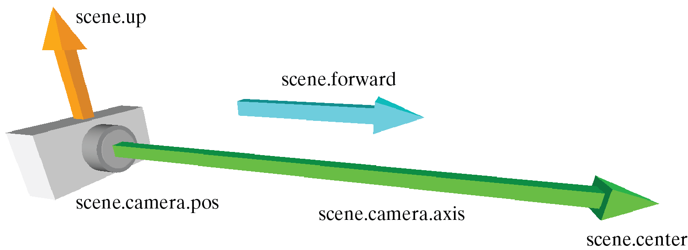

The Camera¶
Every canvas, including the default canvas scene, contains a camera. By default, the camera points at the center of the scene, and zooms in or out to get all objects into its field of view. Also by default, the user can zoom in or out, rotate the camera around the scene, and pan up and down or left and right.
User control of the camera¶
scene.userzoom = True User can zoom in and out of the scene. Default True
scene.userspin = True User can rotate camera. Default True
scene.userpan = True User can pan across the scene. Default True
scene.autoscale = True Camera automatically zooms out to keep all objects in view. Default True
Program control of the view¶

The diagram above depicts the attributes of scene discussed below and indicates their relationships.¶
scene.center Location toward which the camera continually looks. Default <0,0,0>.
scene.forward Vector pointing in the direction in which the camera points. Default <0,0,-1>. Magnitude of this vector is ignored. If scene.forward is changed, the camera is moved to a position from which scene.forward points at scene.center.
scene.range Distance from scene.center to edge of canvas. For a rectangular canvas range is the shorter of the two possible distances (the y direction for a canvas that is wider than it is tall).
scene.fov Field of view of the camera in radians. Changes automatically if scene.autoscale is True.
scene.up A vector perpendicular to scene.forward. By default <0,1,0>. Changing scene.up rotates the camera around the z axis.
Manipulating the camera directly¶
You may need to manipulate the camera directly if, for example, you are doing a fly-through of the scene:
scene.camera.pos The position of the camera. Changes automatically if scene.autoscale is True. Changing scene.camera.pos changes scene.center to scene.camera.pos + scene.camera.axis.
scene.camera.axis The current direction in which the camera is pointing. scene.camera.axis = scene.center - scene.camera.pos. Changing scene.camera.axis changes scene.forward and scene.center. NOTE: it is possible to point the camera in a direction in which there is nothing to see.
scene.camera.rotate(angle=myangle, axis=myaxis, origin=myorigin)
scene.camera.follow(myobject) Resets the center of the scene to the current position of myobject. To turn off following set: scene.camera.follow(None).
See also
canvas; Rotation